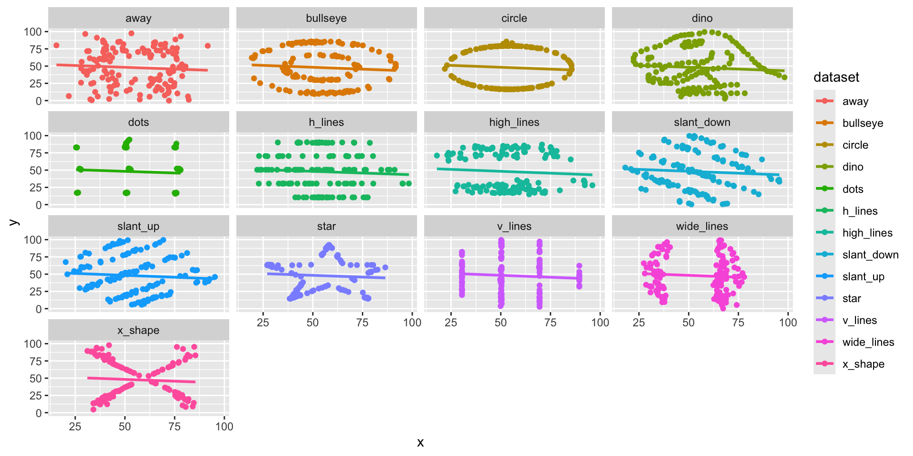
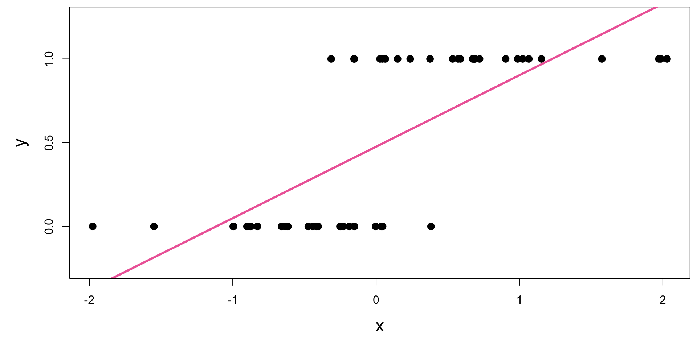
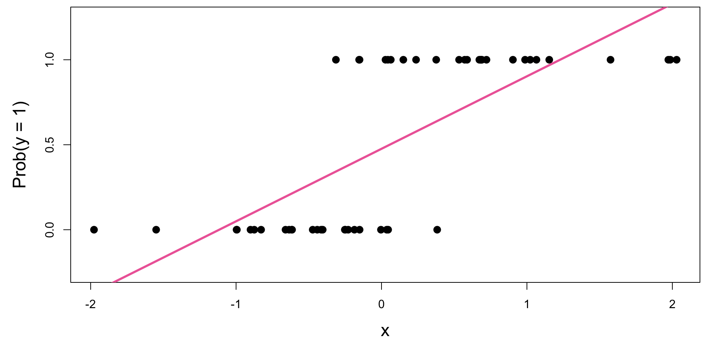
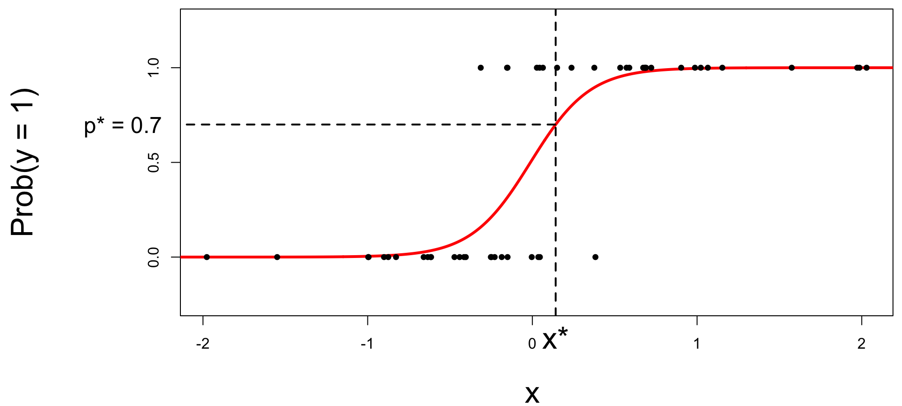
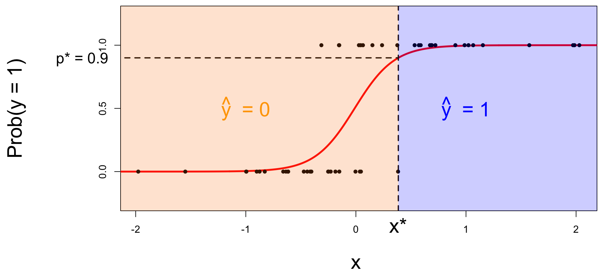
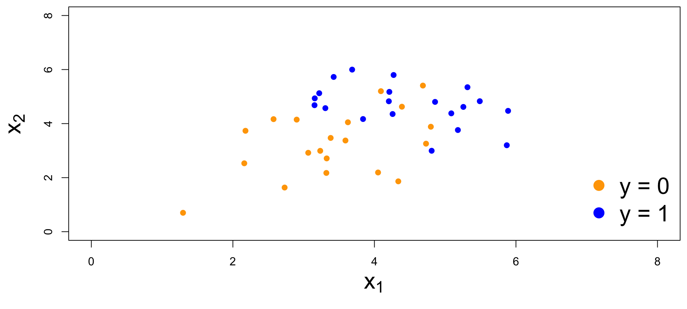

Logistic regression
Lecture 18
June 11, 2025
While you wait…
Go to your
aeproject in RStudio.Make sure all of your changes up to this point are committed and pushed, i.e., there’s nothing left in your Git pane.
Click Pull to get today’s application exercise file: ae-14-spam-filter.qmd.
Wait till the you’re prompted to work on the application exercise during class before editing the file.
Thus far…
We have been studying regression:
What combinations of data types have we seen?
What did the picture look like?
Linear Models: Just because you can…
… doesn’t mean you should!!
Linear Models: Just because you can…
… doesn’t mean you should!!

Linear models have infinite range
Today: a binary response
Categorical with two levels (0 or 1).
- Yes (1) vs. No (0)
- Win (1) vs. Lose (0)
- True (1) vs. False (0)
- Heads (1) vs. Tails (0)
- And so much more!
\[ y = \begin{cases} 1 & &&\text{eg. Yes, Win, True, Heads, ...}\\ 0 & &&\text{eg. No, Lose, False, Tails, ...} \end{cases} \]
Example Plot

Who cares?
If we can model the relationship between predictors (\(x\)) and a binary response (\(y\)), we can use the model to do a special kind of prediction called classification.
Example: is the e-mail spam or not?
\[ \mathbf{x}: \text{word and character counts in an e-mail.} \]

\[ y = \begin{cases} 1 & \text{it's spam}\\ 0 & \text{it's legit} \end{cases} \]
Example: is it cancer or not?
\[ \mathbf{x}: \text{features in a medical image.} \]

\[ y = \begin{cases} 1 & \text{it's cancer}\\ 0 & \text{it's healthy} \end{cases} \]
Example: will they default?
\[ \mathbf{x}: \text{financial and demographic info about a loan applicant.} \]
\[ y = \begin{cases} 1 & \text{applicant is at risk of defaulting on loan}\\ 0 & \text{applicant is safe} \end{cases} \]
How do we model this type of data?

Straight line of best fit is a little silly

Modelling probabilities
Instead of modeling \(y\) directly, let’s model the probability that \(y=1\):
- “Given new email, what’s the probability that it’s spam?’’
- “Given new image, what’s the probability that it’s cancer?’’
- “Given new loan application, what’s the probability that they default?’’
Modelling probabilities: lines are still silly

Instead: S-curve of best fit
Why don’t we model y directly?
-
Recall regression with a numerical response:
Our models do not output guarantees for \(y\), they output predictions that describe behavior on average;
-
Similar when modeling a binary response:
Our models cannot directly guarantee that \(y\) will be zero or one. The correct analog to “on average” for a 0/1 response is “what’s the probability?”
On average vs. What’s the probability?
Let’s suppose I’m classifying emails as spam ( \(y = 1\) ) vs. legit ( \(y\) = 0 ). At some given length (suppose \(x = 500\) words), I see that:
8 emails were spam
2 emails were legit
What does it mean to average these together?
\[ \frac{1 + 1 + 1 + 1 + 1 + 1 + 1 + 1 + 0 + 0}{10} = \frac{8}{10} = 0.8 \]
Again: S-curve of best fit
So, what is this S-curve, anyways?
It’s the logistic function:
\[ \text{Prob}(y = 1) = \frac{e^{\beta_0+\beta_1x}}{1+e^{\beta_0+\beta_1x}}. \]
If you set \(p = \text{Prob}(y = 1)\) and do some algebra, you get the simple linear model for the log-odds:
\[ \log\left(\frac{p}{1-p}\right) = \beta_0+\beta_1x. \]
This is called the logistic regression model.
Log-odds?
\(p = \text{Prob}(y = 1)\) is a probability. A number between 0 and 1;
-
\(\frac{p}{(1 - p)}\) is the odds. A number between 0 and \(\infty\);
80% probability an email is spam; 20% an email is legit
The odds an email is spam are 4 to 1
The log odds \(\log(\frac{p}{1 - p})\) is a number between \(-\infty\) and \(\infty\), which is suitable for the linear model.
\[ \log\left(\frac{p}{1-p}\right) = \beta_0+\beta_1x. \]
Probability to odds
Odds to log odds
Logistic regression
\[ \log\left(\frac{p}{1-p}\right) = \beta_0+\beta_1x. \]
The logit function \(\log(\frac{p}{1-p})\) is an example of a link function that transforms the linear model to have an appropriate range;
This is an example of a generalized linear model
Estimation
We estimate the parameters \(\beta_0,\,\beta_1\) using maximum likelihood (don’t worry about it) to get the “best fitting” S-curve;
The fitted model is
\[ \log\left(\frac{\widehat{p}}{1-\widehat{p}}\right) = b_0+b_1x. \]
Today’s data
# A tibble: 3,921 × 6
spam dollar viagra winner password exclaim_mess
<fct> <dbl> <dbl> <fct> <dbl> <dbl>
1 0 0 0 no 0 0
2 0 0 0 no 0 1
3 0 4 0 no 0 6
4 0 0 0 no 0 48
5 0 0 0 no 2 1
6 0 0 0 no 2 1
7 0 0 0 no 0 1
8 0 0 0 no 0 18
9 0 0 0 no 0 1
10 0 0 0 no 0 0
# ℹ 3,911 more rowsFitting a logistic model
Fitting a logistic model
# A tibble: 2 × 5
term estimate std.error statistic p.value
<chr> <dbl> <dbl> <dbl> <dbl>
1 (Intercept) -2.27 0.0553 -41.1 0
2 exclaim_mess 0.000272 0.000949 0.287 0.774Fitted equation for the log-odds:
\[ \log\left(\frac{\hat{p}}{1-\hat{p}}\right) = -2.27 + 0.000272\times exclaim~mess \]
Be careful!!
üíñ‚úÖ This is correct‚úÖüíñ
\[ \log\left(\frac{\hat{p}}{1-\hat{p}}\right) = -2.27 + 0.000272\times exclaim~mess \]
❌ üõëThese are wrong! Do not do this! ‚ùåüõë
\[ \widehat{spam} = -2.27 + 0.000272\times exclaim~mess \]
\[ \widehat{p} = -2.27 + 0.000272\times exclaim~mess \]
Interpreting the intercept
Plug in \(x = 0\):
\[ \log\left(\frac{\widehat{p}}{1-\widehat{p}}\right) = b_0+b_1x. \]
When \(x = 0\), the estimated probability that \(y = 1\) is
\[ \hat{p} = \frac{e^{b_0}}{1+e^{b_0}} \]
Interpreting the intercept: emails
If exclaim_mess = 0, then
\[ \hat{p}=\widehat{P(y=1)}=\frac{e^{-2.27}}{1+e^{-2.27}}\approx 0.09. \]
So, we estimate that an email with no exclamation marks has a 9% chance of being spam.
Interpreting the slope is tricky
Recall:
\[ \log\left(\frac{\widehat{p}}{1-\widehat{p}}\right) = b_0+b_1x. \]
Alternatively:
\[ \frac{\widehat{p}}{1-\widehat{p}} = e^{b_0+b_1x} = \color{blue}{e^{b_0}e^{b_1x}} . \]
If we increase \(x\) by one unit, we have:
\[ \frac{\widehat{p}}{1-\widehat{p}} = e^{b_0}e^{b_1(x+1)} = e^{b_0}e^{b_1x+b_1} = {\color{blue}{e^{b_0}e^{b_1x}}}{\color{red}{e^{b_1}}} . \]
A one unit increase in \(x\) is associated with a change in odds by a factor of \(e^{b_1}\). Gross!
Sign of the slope is meaningful
A one unit increase in \(x\) is associated with a change in odds by a factor of \(e^{b_1}\).
- A positive slope means increasing \(x\) increases the odds (and probability!) that \(y = 1\)
- A negative slope means increasing \(x\) decreases the odds (and probability!) that \(y = 1\)
Back to the example…
\[ \log\left(\frac{\hat{p}}{1-\hat{p}}\right) = -2.27 + 0.000272\times exclaim~mess \]
If we add one exclamation mark to the model, we predict the odds of an email being spam to be higher by a factor of \(e^{0.000272}\approx 1.000272\) on average.
Logistic regression -> classification?
Step 0: fit the model
Step 1: pick a threshold
Select a number \(0 < p^* < 1\):
- if \(\text{Prob}(y=1)\leq p^*\), then predict \(\widehat{y}=0\);
- if \(\text{Prob}(y=1)> p^*\), then predict \(\widehat{y}=1\).
Step 2: find the “decision boundary”
Solve for the x-value that matches the threshold:

- if \(\text{Prob}(y=1)\leq p^*\), then predict \(\widehat{y}=0\);
- if \(\text{Prob}(y=1)> p^*\), then predict \(\widehat{y}=1\).
Step 3: classify a new arrival
A new person shows up with \(x_{\text{new}}\). Which side of the boundary are they on?
- if \(x_{\text{new}} \leq x^\star\), then \(\text{Prob}(y=1)\leq p^*\), so predict \(\widehat{y}=0\) for the new person;
- if \(x_{\text{new}} > x^\star\), then \(\text{Prob}(y=1)> p^*\), so predict \(\widehat{y}=1\) for the new person.
Let’s change the threshold
A new person shows up with \(x_{\text{new}}\). Which side of the boundary are they on?

- if \(x_{\text{new}} \leq x^\star\), then \(\text{Prob}(y=1)\leq p^*\), so predict \(\widehat{y}=0\) for the new person;
- if \(x_{\text{new}} > x^\star\), then \(\text{Prob}(y=1)> p^*\), so predict \(\widehat{y}=1\) for the new person.
Let’s change the threshold
A new person shows up with \(x_{\text{new}}\). Which side of the boundary are they on?

- if \(x_{\text{new}} \leq x^\star\), then \(\text{Prob}(y=1)\leq p^*\), so predict \(\widehat{y}=0\) for the new person;
- if \(x_{\text{new}} > x^\star\), then \(\text{Prob}(y=1)> p^*\), so predict \(\widehat{y}=1\) for the new person.
Nothing special about one predictor…
Two numerical predictors and one binary response:

“Multiple” logistic regression
On the probability scale:
\[ \text{Prob}(y = 1) = \frac{e^{\beta_0+\beta_1x_1+\beta_2x_2+...+\beta_mx_m}}{1+e^{\beta_0+\beta_1x_1+\beta_2x_2+...+\beta_mx_m}}. \]
For the log-odds, a multiple linear regression:
\[ \log\left(\frac{p}{1-p}\right) = \beta_0+\beta_1x_1+\beta_2x_2+...+\beta_mx_m. \]
Decision boundary, again
Consider two numerical predictors:

- if new \((x_1,\,x_2)\) below, \(\text{Prob}(y=1)\leq p^*\). Predict \(\widehat{y}=0\) for the new person;
- if new \((x_1,\,x_2)\) above, \(\text{Prob}(y=1)> p^*\). Predict \(\widehat{y}=1\) for the new person.
Decision boundary, again
It’s linear! Consider two numerical predictors:
- if new \((x_1,\,x_2)\) below, \(\text{Prob}(y=1)\leq p^*\). Predict \(\widehat{y}=0\) for the new person;
- if new \((x_1,\,x_2)\) above, \(\text{Prob}(y=1)> p^*\). Predict \(\widehat{y}=1\) for the new person.
Decision boundary, again
It’s linear! Consider two numerical predictors:
- if new \((x_1,\,x_2)\) below, \(\text{Prob}(y=1)\leq p^*\). Predict \(\widehat{y}=0\) for the new person;
- if new \((x_1,\,x_2)\) above, \(\text{Prob}(y=1)> p^*\). Predict \(\widehat{y}=1\) for the new person.
Note: the classifier isn’t perfect
- Blue points in the orange region: spam (1) emails misclassified as legit (0);
- Orange points in the blue region: legit (0) emails misclassified as spam (1).
How do you pick the threshold?
To balance out the two kinds of errors:

- High threshold:
- Hard to classify as 1, so FP less likely and FN more likely
- Low threshold:
- Easy to classify as 1, so FP more likely and FN less likely
Silly examples
-
Set p* = 0
- Classify every email as spam (1);
- No false negatives, but a lot of false positives;
-
Set p* = 1
- Classify every email as legit (0);
- No false positives, but a lot of false negatives.
You pick a threshold in between to strike a balance. The exact number depends on context.
ae-14-spam-filter
Go to your ae project in RStudio.
If you haven’t yet done so, make sure all of your changes up to this point are committed and pushed, i.e., there’s nothing left in your Git pane.
If you haven’t yet done so, click Pull to get today’s application exercise file: ae-14-spam-filter.qmd.
Work through the application exercise in class, and render, commit, and push your edits.